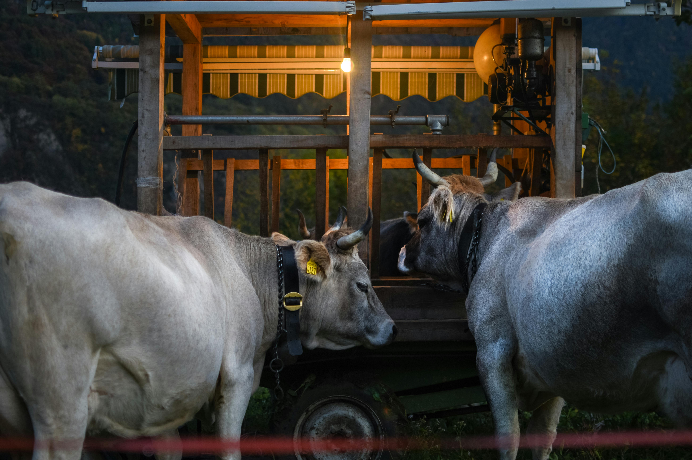
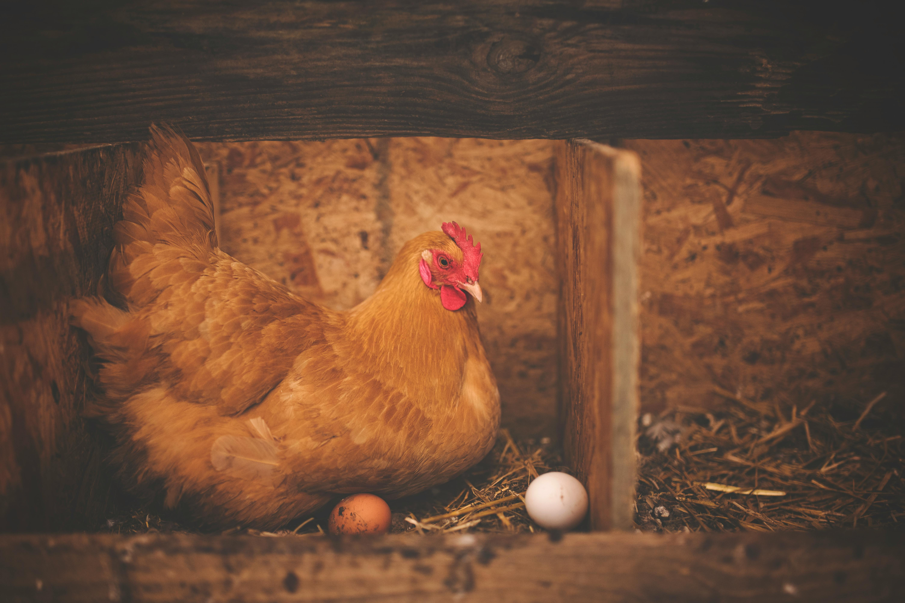
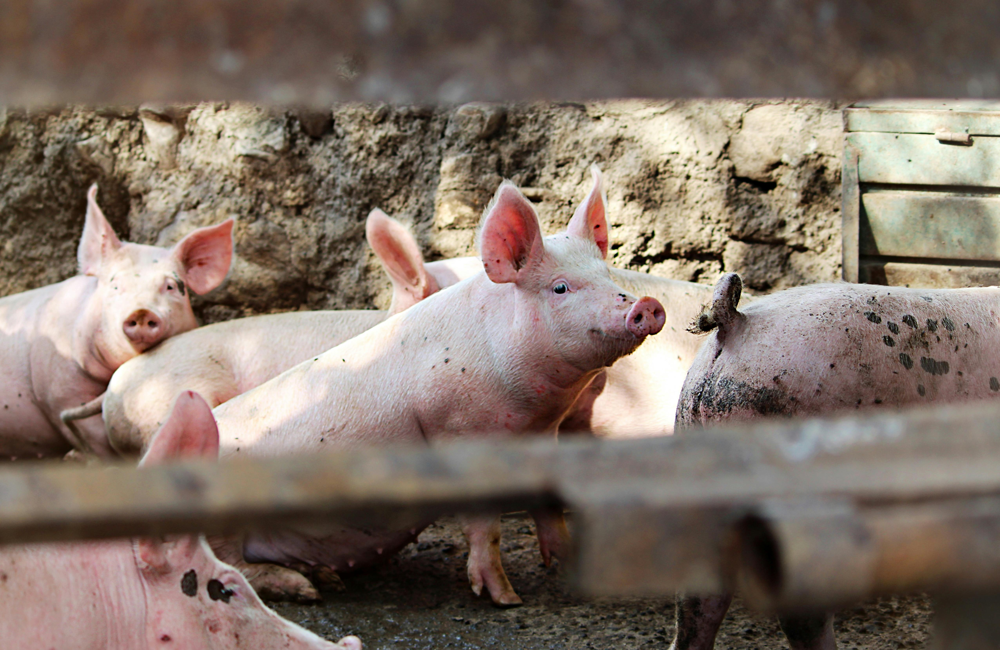
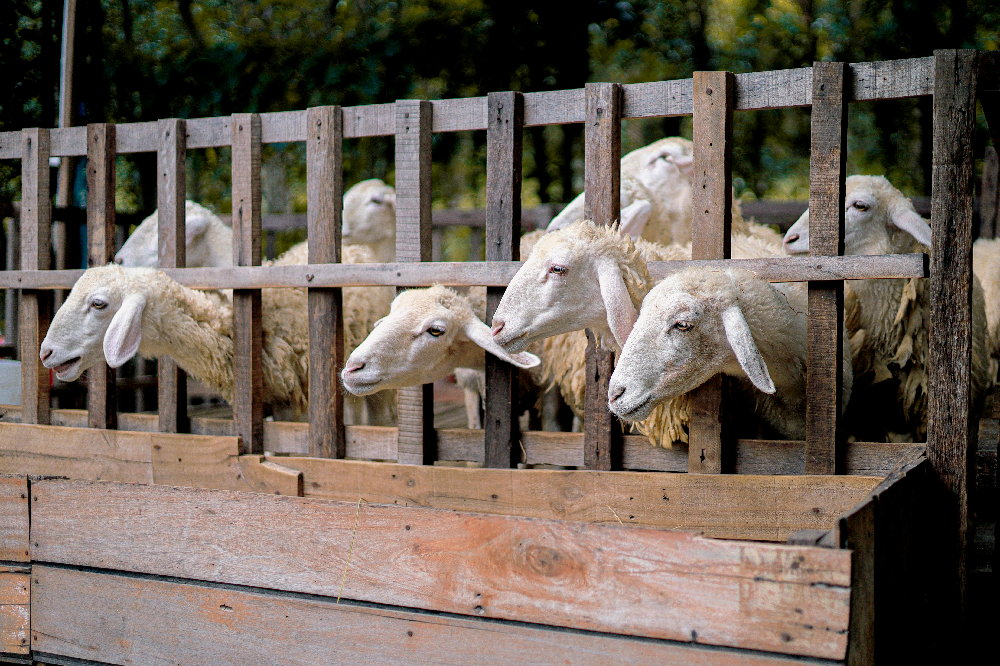

BOVINOS
La producción de bovinos con buena rentabilidad camina de la mano con la eficiencia de
producción y a su vez, estas dos tienen que ver con la velocidad del giro del capital.
El territorio paraguayo, a pesar de tener una excelente aptitud para la cría de ganado bovino,
en la mayoría de los casos no permite al productor ganadero proporcionar a sus animales vacunos
todos los requerimientos nutricionales sean estos para producción de leche o para la producción
de carne que necesitan diariamente.
Es por este motivo, que vendemos una línea completa de balanceados, concentrados y sales
minerales, que dan al productor distintas soluciones nutricionales para producir con eficiencia.

AVES
Las aves tienen regímenes dietéticos muy variables, aunque, en general, sumamente ricos
en principios energéticos y proteicos, permitiendo una rápida transformación del alimento.
Según el tipo de alimento que ingieren, el tipo de pico que tienen o la relación entre el tamaño
del cuerpo y alas pueden ser clasificadas de diferentes maneras.
Nuestra línea de alimentos balanceados y concentrados está dirigida a las aves de mayor interés
económico, como ser las gallinas ponedoras y los pollos parrilleros en todas las etapas de su
desarrollo, desde el nacimiento hasta la faena.

CERDOS
La carne de cerdo es uno de los productos de origen animal más consumidos a nivel
mundial, al ser fuente de proteínas y grasas más saludables al consumidor, no es un alimento
rico en colesterol y casi toda su carne es aprovechable.
Hablando en términos de aprovechamiento se puede afirmar que el cerdo es el rey de los animales
en esta categoría. Es así porque 60 % de su carne se consume en fresco, y el resto se aprovecha
en la elaboración de embutidos y salazones. La carne de cerdo y sus derivados son un alimento
universal.
Es por esto, que la línea Supermix de nutrición para cerdos, cuenta con una completa lista de
herramientas nutricionales, pensadas para atender los diferentes tipos de crianza según la
finalidad.

OVINOS
La producción ovina en el Paraguay ha venido cobrando una especial importancia debido a
sus altos índices de productividad por hectárea, tanto en cría, como en engorde y producción de
lana.
La nutrición de esta especie, tiene la particularidad de que debe tener adecuados niveles de
cobre en la ración, por lo que no es cualquier ración que puede ser utilizada en su
suplementación.
Es por este motivo, que vendemos balanceados y una sal mineral que se adecuen a los
requerimientos nutricionales de los ovinos, para completarlos y permitir al productor llegar a
los máximos niveles posibles de producción.